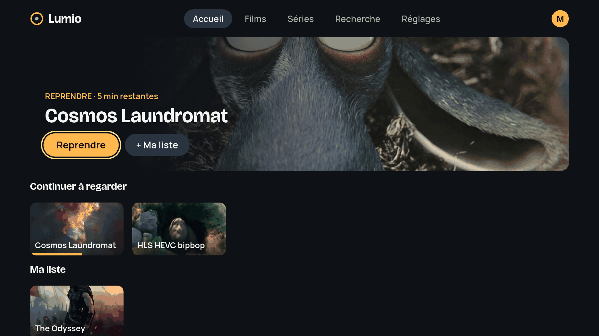
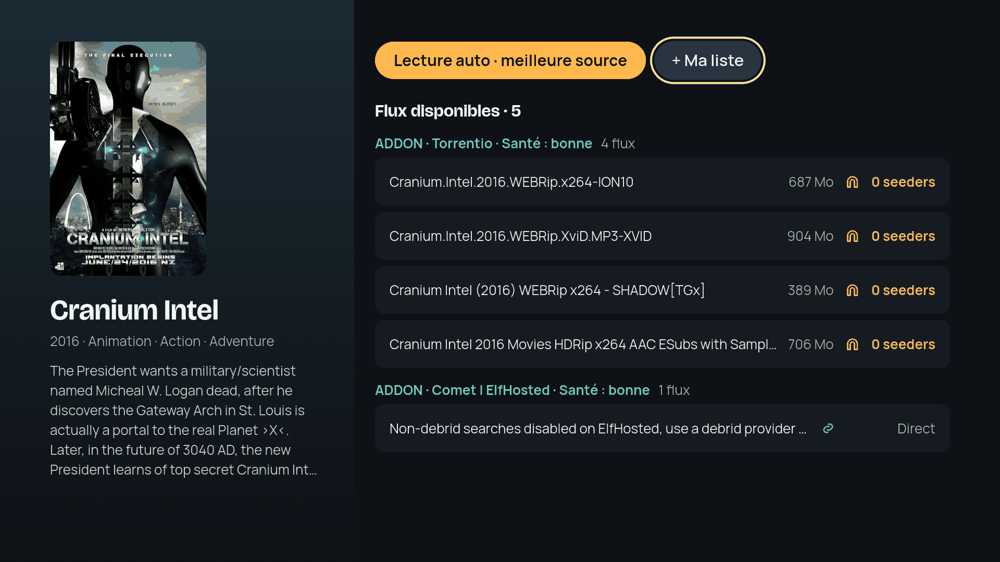
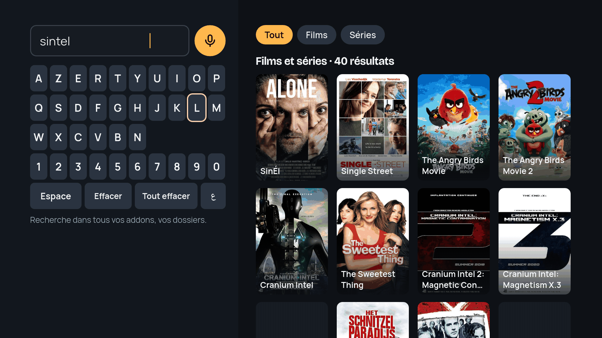
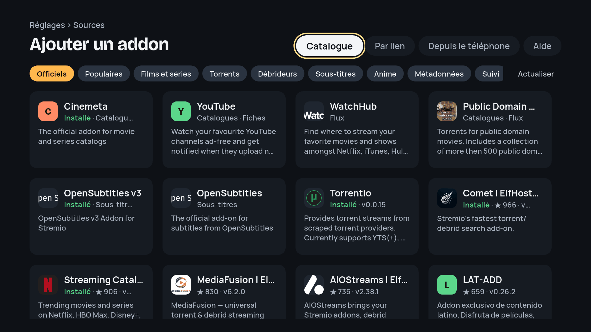
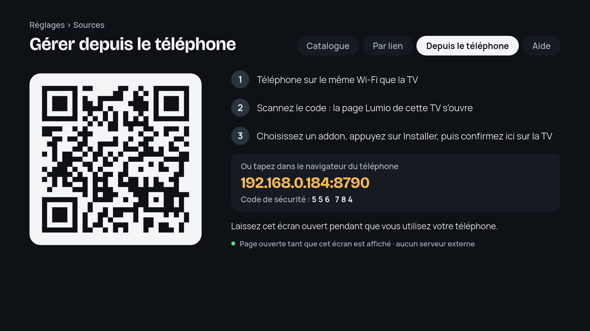
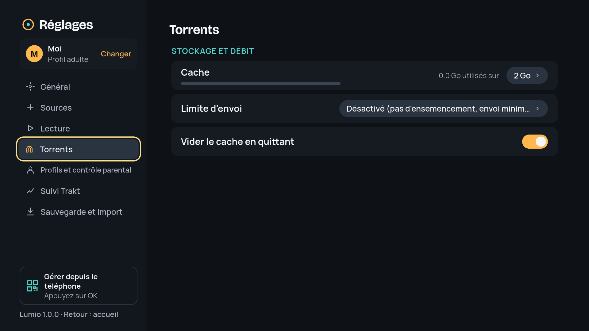
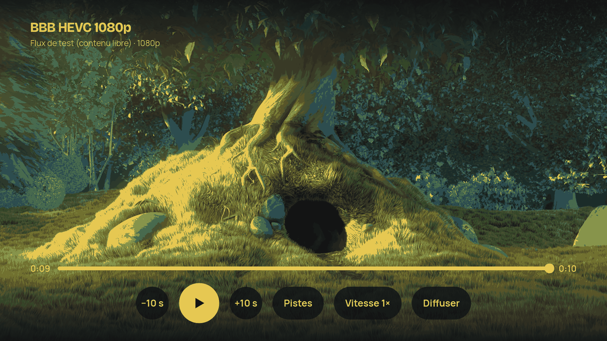

Android TV et téléphone · version 1.0.1
Vos addons, votre télécommande.
Lumio est un client média libre pensé pour la télécommande : addons, torrents intégrés, dossiers locaux, profils avec contrôle parental. Sans compte, sans synchronisation.
Un doute ? Prenez la version 32 bits : elle fonctionne sur presque tous les appareils. Notes de version · Sommes SHA-256

Quel fichier choisir ?
armeabi-v7a (32 bits)
Box et TV Android d'entrée de gamme (la plupart des « Google TV 4K » du commerce), anciennes tablettes. Fonctionne aussi sur les appareils 64 bits.
arm64-v8a (64 bits)
Téléphones et tablettes récents, box Android TV 64 bits.
Pour savoir : sur l'appareil, Réglages › Système › À propos. Sinon, l'application vous propose elle-même le bon fichier pour les mises à jour.
Installer pas à pas
Récupérer l'APK
Avec Downloader (gratuit sur Android TV) : saisissez l'adresse du fichier, par exemple
github.com/vantaflow/lumio/releases/latest/download/lumio-armeabi-v7a.apk. Avec une clé USB : téléchargez le fichier sur un ordinateur, copiez-le sur la clé, branchez-la sur la box.Autoriser les sources inconnues
Android demande l'autorisation la première fois : Réglages › Applications › Sécurité et restrictions › Sources inconnues, puis activez-la pour Downloader (ou pour votre gestionnaire de fichiers).
Installer
Ouvrez le fichier, choisissez « Installer », puis « Ouvrir ». Lumio apparaît aussi dans la liste des applications de la TV.
Ajouter vos addons
Réglages › Sources › Ajouter un addon : catalogue intégré, lien
manifest.json, ou depuis le téléphone en scannant le QR affiché par la TV.
Par adb : adb install -r lumio-armeabi-v7a.apk. Les mises à jour suivantes : une bannière s'affiche sur l'accueil quand une nouvelle version est publiée ; l'installation se fait par-dessus, sans perdre vos réglages.
En images
Captures réelles de Lumio 1.0.0 sur une box Google TV.






Vérifier le fichier
Chaque release publie SHA256SUMS.txt. Comparez la somme de votre fichier :
shasum -a 256 lumio-*.apk # macOS, Linux
Get-FileHash lumio-*.apk # Windows PowerShellLes APK sont signés avec la clé de release de Lumio. Android refuse d'installer par-dessus une version signée par une autre clé : dans ce cas, sauvegardez vos données (Réglages › Sauvegarde et import), désinstallez l'ancienne version, puis installez celle-ci.
Questions fréquentes
Lumio fournit-il des films ? Non, aucun contenu ni addon n'est fourni.
Faut-il un compte ? Non. Rien n'est synchronisé, tout reste sur votre appareil.
Où signaler un problème ? Dans les tickets du dépôt.
À lire avant d'utiliser Lumio
Lumio ne fournit aucun addon et aucun contenu, ne contient aucun « scraper » et n'indexe rien. Vous êtes responsable des sources que vous ajoutez et du respect du droit d'auteur dans votre pays.
Lumio est un projet indépendant, non affilié à Stremio. « Compatible avec le protocole d'addons » décrit uniquement l'interopérabilité technique.